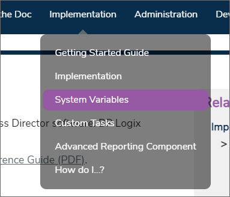
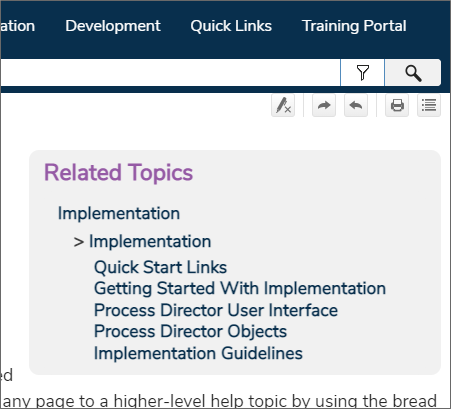
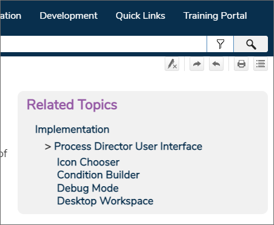
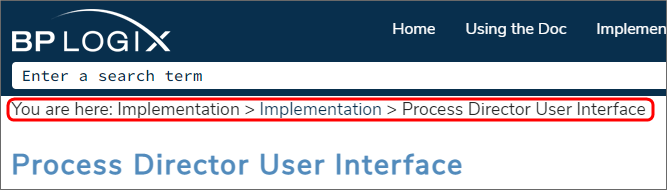
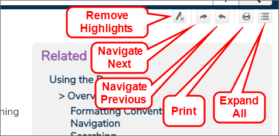

Navigating through the documentation can be performed by using the dropdown menu bar that appears at the top of each page.
Each item in the navigation menu will open to display the appropriate section when you place the mouse over a menu item.

Clicking on any of the sections listed in the dropdown menu will automatically open that section of the documentation.
Once you've navigated to a section of the documentation, a context-sensitive Table of Contents for that section, labeled "Related Topics", will appear at the right top corner of the page. For instance, if we navigate to the Implementation section, the table of contents for the main topics will be displayed.

Since this is a context-sensitive Table of Contents, if we click on the topic labeled, Process Director User Interface, we'll see a different table of contents for the items related to that specific topic.

Using this context-sensitive Table of Contents, you can continue to drill down through the related topics. You can use the BACK button on your browser to return to the previous, higher-level pages. Additionally, as you navigate through the pages, a "breadcrumb" list will be displayed in the top left portion of the page.

You can click on any of the items in the breadcrumbs list to navigate directly to that item, without having to use the Browser's BACK button to go back one page at a time.
Finally, at the top of each page there is a series of Icons in the upper right corner:
